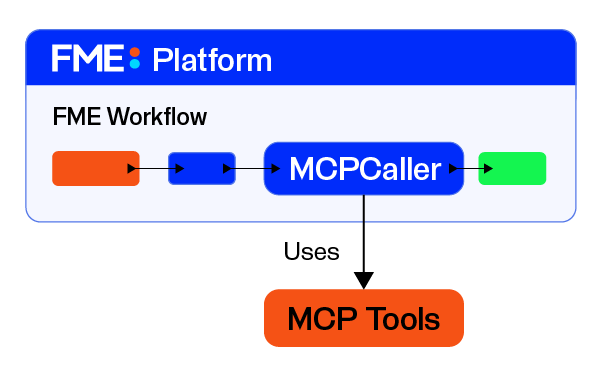
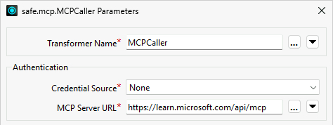
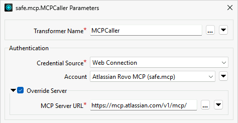
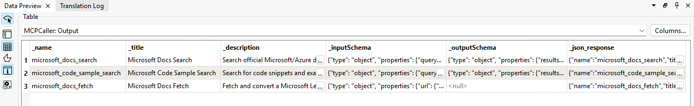

After completing this lesson, you'll be able to:
In this lesson, you will:
The MCPCaller transformer connects to an existing MCP server to work with MCP tools, resources, and prompts. The MCPCaller is the key component that enables FME to act as an MCP client, calling MCP tools on a server and receiving the output.

Within your FME workspace, the MCPCaller connects to an MCP server and issues a request. If the MCP server requires authentication, the MCPCaller uses a web connection to authorize access to the server. Each MCP server has a unique URL that you enter into the MCPCaller to connect to it. Along with the URL, the MCPCaller will make a request to the MCP server when it runs. If the MCP server requires authentication, you may need to enable Override Server and enter the MCP server URL to override the URL saved in the web connection. Every MCP server URL must support streamable HTTP transport.


The MCPCaller can perform various types of requests to the MCP server, from inquiries to executions. There are options to list and interact with tools, resources, and prompts. Instead of building a custom connector for each external service, FME can connect to an MCP server, inspect the tools it exposes, and call them consistently. The result can then be parsed, transformed, written, routed, or combined with other data using standard FME transformers.
Depending on the MCP request method, the MCPCaller will require additional data to input along with the request to the MCP server. For example, the call tool method requires you to select the tool and provide additional input as JSON.

The output from the MCPCaller will vary by method, although all communication between the MCP server and client uses JSON as the protocol standard. To return the raw JSON of the MCP response for that operation, enable the Include JSON Response option in the Advanced section. This may be useful for inspecting the full server response or accessing fields not otherwise exposed as attributes.
The MCPCaller is an optional input transformer, meaning that an input record is not required to run it. When input records are provided to the MCPCaller, it runs once per record received to the Input port. If no input is connected to the transformer, it will run only once. For more information on optional input transformers, see Transformers with an Optional Input Port.
The List Tools request returns a list of all available MCP tools from the server. It is a discovery inquiry about the MCP server you are working with and is the best place to start when working with MCP. By running a List Tools request, you confirm that the MCPCaller can successfully connect to the server and it returns the currently available tool names, descriptions, and schemas.
List Tools does not require any additional input beyond setting the MCP server to query; however, the Advanced options allow you to control whether each tool is returned as an individual record or combined into a single list.

The output from the MCPCaller List Tools includes the tool name, title, description, and JSON schemas for input and output. The List Tools results allow you or an AI model to analyze which tool best performs the task you need and which inputs you require to run the tool.

The Call Tool method makes a request to the MCP server to run the specified tool. If the MCPCaller has multiple inputs, it will make multiple Call Tool requests, one for each input record. If no input is provided to the MCPCaller, it will make the Call Tool request only once and output a single record.
Once you select the tool to call, the MCPCaller parameters update to show you the input JSON schema the tool expects and a Tool Input section to configure. The JSON input to a tool may come from an Attribute or Text, or from a File containing the input JSON. To customize the tool input from your data, reference attribute values in the JSON Text.

The output from a Call Tool request creates a _data attribute containing the tool call's results in JSON. You can further parse the JSON into attributes with the JSONFragmenter to continue working with the MCP output in your workspace.